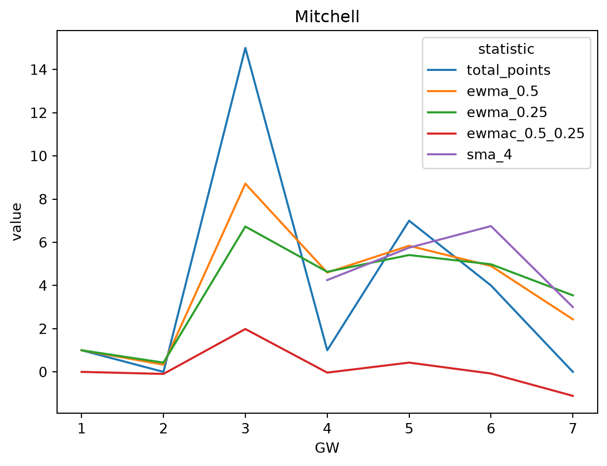
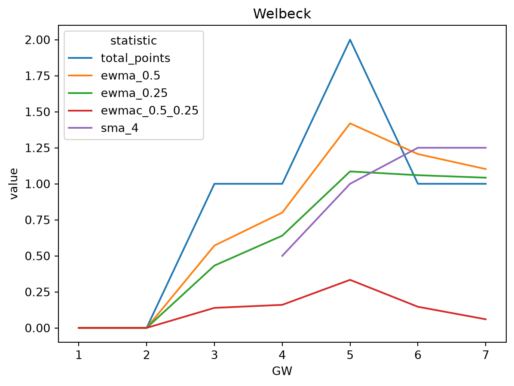
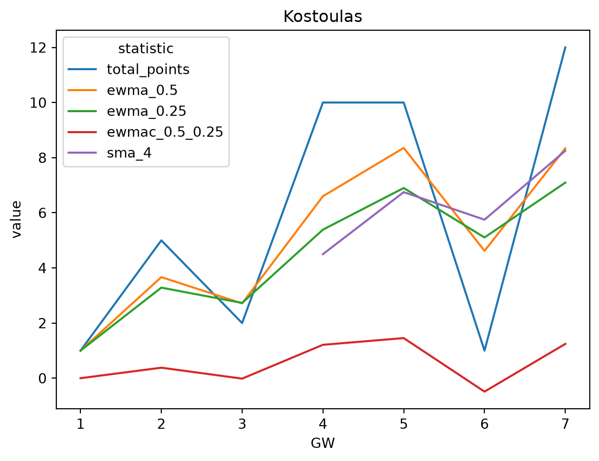
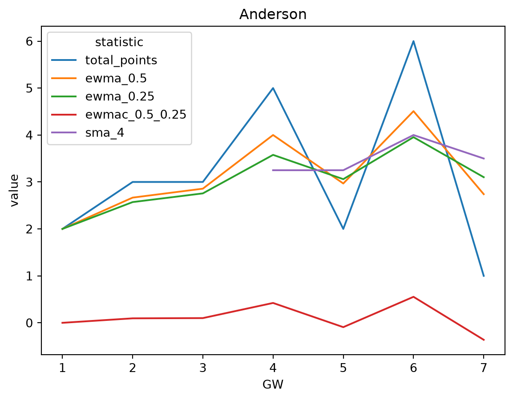
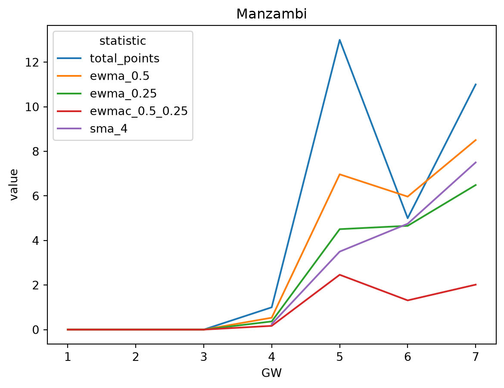

PID second_name position_name sma_4 ewmac_0.5_0.25 now_cost
124 Groß Midfielder 10.50 -1.0 62
115 De Cuyper Defender 9.50 -0.0 53
411 Haaland Forward 8.50 1.0 157
138 Kostoulas Forward 8.25 1.2 57
504 Vušković Defender 8.25 1.0 51
53 Manzambi Midfielder 7.50 2.0 60
109 Verbruggen Goalkeeper 7.25 0.5 46
129 Ayari Midfielder 6.75 2.1 54
114 Boscagli Defender 6.75 1.4 45
1 Raya Martín Goalkeeper 6.75 0.4 61
79 de Lima Barbosa Forward 6.50 1.9 61
113 Kadıoğlu Defender 6.50 1.0 44
165 Junqueira de Jesus Forward 6.50 -0.9 79
286 Belloumi Midfielder 6.25 -1.0 52
229 Tarkowski Defender 6.25 -1.9 62
94 Schade Midfielder 6.25 -1.9 62
156 Lomba Neto Midfielder 6.00 2.7 65
127 Gómez Amarilla Midfielder 6.00 0.8 50
397 Semenyo Midfielder 6.00 -1.2 83
261 Iwobi Midfielder 5.75 1.8 54GW 8
In essence, we’ll go through the same motions as last week - rank all players, rank my players, make some transfers.
Ranking players by SMA(4) and EWMAC(0.5, 0.25)
Let’s get the players with the highest simple moving 4 week average, and consider buying those with large EWMAC(0.5, 0.25).
Removing anyone with a negative EWMAC(0.5, 0.25)…
PID second_name position_name sma_4 ewmac_0.5_0.25 now_cost
115 De Cuyper Defender 9.50 -0.0 53
411 Haaland Forward 8.50 1.0 157
138 Kostoulas Forward 8.25 1.2 57
504 Vušković Defender 8.25 1.0 51
53 Manzambi Midfielder 7.50 2.0 60
109 Verbruggen Goalkeeper 7.25 0.5 46
129 Ayari Midfielder 6.75 2.1 54
114 Boscagli Defender 6.75 1.4 45
1 Raya Martín Goalkeeper 6.75 0.4 61
79 de Lima Barbosa Forward 6.50 1.9 61
113 Kadıoğlu Defender 6.50 1.0 44
156 Lomba Neto Midfielder 6.00 2.7 65
127 Gómez Amarilla Midfielder 6.00 0.8 50
261 Iwobi Midfielder 5.75 1.8 54
101 Henderson Midfielder 5.75 1.2 49
13 Rice Midfielder 5.75 1.1 73
346 Calvert-Lewin Forward 5.75 0.8 61
257 Bassey Defender 5.50 1.1 45
8 Calafiori Defender 5.50 0.1 60
68 Tavernier Midfielder 5.25 0.6 62Now we’ll look at our team
PID second_name position_name sma_4 ewmac_0.5_0.25 now_cost
115 De Cuyper Defender 9.50 -0.0 53
109 Verbruggen Goalkeeper 7.25 0.5 46
165 Junqueira de Jesus Forward 6.50 -0.9 79
229 Tarkowski Defender 6.25 -1.9 62
261 Iwobi Midfielder 5.75 1.8 54
13 Rice Midfielder 5.75 1.1 73
346 Calvert-Lewin Forward 5.75 0.8 61
45 McGinn Midfielder 5.75 -0.3 54
250 Leno Goalkeeper 5.00 0.4 45
388 Guéhi Defender 4.25 -1.1 60
481 Anderson Midfielder 3.50 -0.4 63
204 Mitchell Defender 3.00 -1.1 45
136 Welbeck Forward 1.25 0.1 58
96 Damsgaard Midfielder 1.25 -0.6 53Transfers
Formation change?
My worst two players are on the bench anyway, so not a huge cause for concern for now. Kostoulas is looking very tempting. Is it time to change my formation? What if sell Welbeck for Kostoulas and then bench Mitchell?:
Mitchell

Welbeck

Kostoulas

Happy to Sell Welbeck for 5.8 and buy Kostoulas for 5.7. I’ll then bench Mitchell to play Kostoulas.
Anderson for Manzambi?
Anderson

Manzambi

Happy to sell Anderson for 6.3 and buy Manzambi for 6.0
Summary
- Sell Welbeck for 5.8 and buy Kostoulas for 5.7
- Sell Anderson for 6.3 and buy Manzambi for 6.0
Net cashflow of negative 0.6m for 2 transfers. Good, this is under 0.5m each.